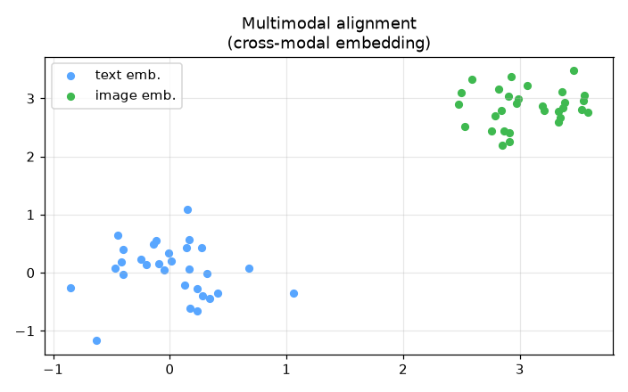

Multimodal Learning — AI engineering example · part of the MLOps monorepo
This example is grounded in Multimodal Learning. The equations below drive every forward and backward pass in the implementation.
Multimodal models align representations from different modalities in a shared embedding space. Cross-attention allows one modality to query another. Contrastive learning pulls matched pairs together and pushes unmatched pairs apart. The total loss balances cross-modal alignment with unimodal task losses.
Concrete forward-pass / update evaluation using the algorithm's own equations:

Interactive embedding alignment plot; cross-attention weight heatmap; modality contribution explorer.
The example follows a consistent data → train → evaluate → serve pipeline. Inputs are loaded and validated, transformed by the core algorithm, scored against held-out data, and exposed through a REST API.
| Class | Public methods | Responsibility |
|---|---|---|
MultimodalPredictRequest | — | |
MultimodalPredictResponse | — | |
DriftResponse | — | |
StatsResponse | — | |
TextEncoder | init_weights, forward | |
ImageEncoder | __post_init__, init_weights, forward | |
AudioEncoder | init_weights, forward | |
Connector | init_weights, forward | |
FusionMechanism | init_weights, early_fusion, late_fusion, hybrid_fusion, forward | |
MultiHeadAttention | __post_init__, init_weights, _split_heads, _combine_heads, set_enc_output, forward, backward, update_params | |
FeedForward | init_weights, forward, backward, update_params | |
AddNorm | init_params, forward, backward | |
TransformerEncoder | __post_init__, forward | |
TransformerDecoder | __post_init__, forward | |
LLMBackbone | _init, forward | |
MultimodalLLM | _init, encode_modalities, fit, predict, evaluate, save, load, to_dict |
data.py reads the source dataset and splits train/test.model.py applies the mathematics from Section 1.api.py exposes prediction endpoints with drift detection.Key design choices in this module: a pure-NumPy implementation (no PyTorch/TensorFlow), schema validation via ai_core.validation, structured JSON logging through ai_core.logging, Prometheus metrics from ai_core.metrics, and MLflow/model-registry persistence via ai_core.model_registry. The FastAPI service wraps the trained model with observability middleware from ai_core.fastapi_middleware.
The most important behaviour is summarised below; full source for each module is collapsible so the page stays readable while remaining self-contained.
No docstring-annotated key methods.
"""Multimodal Large Language Model implementation from scratch using NumPy.
Architecture (following GeeksforGeeks MLLM article):
1. Modality Encoders:
- TextEncoder: token embedding + positional encoding
- ImageEncoder: patch embedding + projection
- AudioEncoder: mel spectrogram + projection
2. Connector (Aligner/Projector):
- MLP-based projection to align modality embeddings to LLM space
3. Fusion Mechanism:
- Early fusion: combine raw embeddings before processing
- Late fusion: combine after independent processing
- Hybrid fusion: combine at multiple layers
4. LLM Backbone:
- Simplified transformer with self-attention
- Generates text conditioned on all modalities
Core concepts:
- Cross-Modal Attention: attention between different modality tokens
- Joint Representation: unified embedding space for all modalities
- Feature Extraction: extract relevant features from each modality
Training objective:
- Data loss: cross-entropy on next-token prediction
- Multimodal alignment: contrastive loss between modalities
Args:
vocab_size: vocabulary size for text
d_model: model dimension
n_heads: number of attention heads
text_encoder_dim: text embedding dimension
image_encoder_dim: image patch embedding dimension
audio_encoder_dim: audio embedding dimension
connector_dim: connector projection dimension
fusion_type: "early", "late", or "hybrid"
max_seq_len: maximum sequence length
n_encoder_layers: number of transformer encoder layers
n_decoder_layers: number of transformer decoder layers
d_ff: feed-forward inner dimension
learning_rate: gradient descent step size
n_iterations: number of training epochs
dropout_rate: dropout probability
weight_decay: L2 regularization
random_seed: random seed
"""
from dataclasses import dataclass, field
import numpy as np
def gelu(x: np.ndarray) -> np.ndarray:
return 0.5 * x * (1.0 + np.tanh(np.sqrt(2.0 / np.pi) * (x + 0.044715 * x ** 3)))
def softmax(z: np.ndarray, axis: int = -1) -> np.ndarray:
z_shifted = z - np.max(z, axis=axis, keepdims=True)
exp_z = np.exp(z_shifted)
return exp_z / np.sum(exp_z, axis=axis, keepdims=True)
def layer_norm(x: np.ndarray, gamma: np.ndarray, beta: np.ndarray, eps: float = 1e-5) -> np.ndarray:
mean = np.mean(x, axis=-1, keepdims=True)
var = np.var(x, axis=-1, keepdims=True)
return gamma * (x - mean) / np.sqrt(var + eps) + beta
def scaled_dot_product_attention(
Q: np.ndarray, K: np.ndarray, V: np.ndarray, mask: np.ndarray | None = None
) -> np.ndarray:
d_k = Q.shape[-1]
scores = Q @ np.swapaxes(K, -2, -1) / np.sqrt(d_k)
if mask is not None:
scores = scores + (mask * -1e9)
attn = softmax(scores, axis=-1)
return attn @ V
def positional_encoding(max_len: int, d_model: int) -> np.ndarray:
pe = np.zeros((max_len, d_model))
for pos in range(max_len):
for i in range(d_model):
angle = pos / (10000 ** (2 * (i // 2) / d_model))
if i % 2 == 0:
pe[pos, i] = np.sin(angle)
else:
pe[pos, i] = np.cos(angle)
return pe
def cross_modal_attention(
query: np.ndarray, key: np.ndarray, value: np.ndarray, mask: np.ndarray | None = None
) -> np.ndarray:
d_k = query.shape[-1]
scores = query @ np.swapaxes(key, -2, -1) / np.sqrt(d_k)
if mask is not None:
scores = scores + (mask * -1e9)
attn_weights = softmax(scores, axis=-1)
return attn_weights @ value
@dataclass
class TextEncoder:
vocab_size: int = 1000
d_model: int = 256
max_seq_len: int = 128
random_seed: int = 42
embedding: np.ndarray | None = None
pos_encoding: np.ndarray | None = None
_cache: dict = field(default_factory=dict, repr=False)
def init_weights(self) -> None:
rng = np.random.default_rng(self.random_seed)
scale = np.sqrt(2.0 / self.d_model)
self.embedding = rng.normal(0, scale, (self.vocab_size, self.d_model))
self.pos_encoding = positional_encoding(self.max_seq_len, self.d_model)
def forward(self, tokens: np.ndarray) -> np.ndarray:
if self.embedding is None:
self.init_weights()
seq_len = tokens.shape[1] if tokens.ndim > 1 else 1
embedded = self.embedding[tokens] * np.sqrt(self.d_model)
if tokens.ndim == 1:
embedded = embedded + self.pos_encoding[:len(tokens)]
else:
embedded = embedded + self.pos_encoding[:seq_len]
self._cache = {"tokens": tokens, "embedded": embedded}
return embedded
@dataclass
class ImageEncoder:
image_dim: int = 3
patch_size: int = 16
n_patches: int = 49
d_model: int = 256
random_seed: int = 42
patch_projection: np.ndarray | None = None
pos_encoding: np.ndarray | None = None
_cache: dict = field(default_factory=dict, repr=False)
def __post_init__(self):
self._patch_dim = self.image_dim * self.patch_size * self.patch_size
if self.n_patches == 0:
self.n_patches = (self.image_dim // self.patch_size) ** 2
def init_weights(self) -> None:
rng = np.random.default_rng(self.random_seed)
scale = np.sqrt(2.0 / self.d_model)
self.patch_projection = rng.normal(0, scale, (self._patch_dim, self.d_model))
self.pos_encoding = positional_encoding(self.n_patches + 1, self.d_model)
def forward(self, image_patches: np.ndarray) -> np.ndarray:
if self.patch_projection is None:
self.init_weights()
batch_size = image_patches.shape[0]
patches_flat = image_patches.reshape(batch_size, self.n_patches, -1)
projected = patches_flat @ self.patch_projection
cls_token = np.zeros((batch_size, 1, self.d_model))
projected = np.concatenate([cls_token, projected], axis=1)
projected = projected + self.pos_encoding
self._cache = {"image_patches": image_patches, "projected": projected}
return projected
@dataclass
class AudioEncoder:
n_mels: int = 80
n_time_steps: int = 100
d_model: int = 256
random_seed: int = 42
mel_projection: np.ndarray | None = None
pos_encoding: np.ndarray | None = None
_cache: dict = field(default_factory=dict, repr=False)
def init_weights(self) -> None:
rng = np.random.default_rng(self.random_seed)
scale = np.sqrt(2.0 / self.d_model)
self.mel_projection = rng.normal(0, scale, (self.n_mels, self.d_model))
self.pos_encoding = positional_encoding(self.n_time_steps, self.d_model)
def forward(self, mel_spectrogram: np.ndarray) -> np.ndarray:
if self.mel_projection is None:
self.init_weights()
projected = mel_spectrogram @ self.mel_projection
projected = projected + self.pos_encoding
self._cache = {"mel_spectrogram": mel_spectrogram, "projected": projected}
return projected
@dataclass
class Connector:
input_dim: int = 256
connector_dim: int = 512
random_seed: int = 42
W1: np.ndarray | None = None
b1: np.ndarray | None = None
W2: np.ndarray | None = None
b2: np.ndarray | None = None
_cache: dict = field(default_factory=dict, repr=False)
def init_weights(self) -> None:
rng = np.random.default_rng(self.random_seed)
scale1 = np.sqrt(2.0 / self.input_dim)
scale2 = np.sqrt(2.0 / self.connector_dim)
self.W1 = rng.normal(0, scale1, (self.input_dim, self.connector_dim))
self.b1 = np.zeros(self.connector_dim)
self.W2 = rng.normal(0, scale2, (self.connector_dim, self.connector_dim))
self.b2 = np.zeros(self.connector_dim)
def forward(self, x: np.ndarray) -> np.ndarray:
if self.W1 is None:
self.init_weights()
z1 = x @ self.W1 + self.b1
a1 = gelu(z1)
z2 = a1 @ self.W2 + self.b2
out = gelu(z2)
self._cache = {"x": x, "z1": z1, "a1": a1, "out": out}
return out
@dataclass
class FusionMechanism:
d_model: int = 512
fusion_type: str = "hybrid"
random_seed: int = 42
W_fusion: np.ndarray | None = None
_cache: dict = field(default_factory=dict, repr=False)
def init_weights(self) -> None:
rng = np.random.default_rng(self.random_seed)
scale = np.sqrt(2.0 / self.d_model)
self.W_fusion = rng.normal(0, scale, (self.d_model * 3, self.d_model))
def early_fusion(self, text: np.ndarray, image: np.ndarray | None = None, audio: np.ndarray | None = None) -> np.ndarray:
modalities = [text]
if image is not None:
modalities.append(image)
if audio is not None:
modalities.append(audio)
min_len = min(m.shape[1] for m in modalities)
truncated = [m[:, :min_len, :] for m in modalities]
fused = np.mean(truncated, axis=0)
self._cache = {"modalities": modalities, "fused": fused}
return fused
def late_fusion(self, text_repr: np.ndarray, image_repr: np.ndarray | None = None, audio_repr: np.ndarray | None = None) -> np.ndarray:
features = [text_repr]
if image_repr is not None:
if image_repr.ndim == 2:
image_repr = image_repr.reshape(image_repr.shape[0], 1, -1)
image_mean = np.mean(image_repr, axis=1, keepdims=True)
image_tiled = np.tile(image_mean, (1, text_repr.shape[1], 1))
features.append(image_tiled)
if audio_repr is not None:
if audio_repr.ndim == 2:
audio_repr = audio_repr.reshape(audio_repr.shape[0], 1, -1)
audio_mean = np.mean(audio_repr, axis=1, keepdims=True)
audio_tiled = np.tile(audio_mean, (1, text_repr.shape[1], 1))
features.append(audio_tiled)
fused = np.concatenate(features, axis=-1)
if self.W_fusion is None:
self.init_weights()
batch_size, seq_len, _ = fused.shape
fused = fused.reshape(batch_size * seq_len, -1)
fused = fused @ self.W_fusion[:fused.shape[1]]
fused = fused.reshape(batch_size, seq_len, self.d_model)
self._cache = {"features": features, "fused": fused}
return fused
def hybrid_fusion(self, text: np.ndarray, image: np.ndarray | None = None, audio: np.ndarray | None = None) -> np.ndarray:
early_fused = self.early_fusion(text, image, audio)
text_mean = np.mean(text, axis=1, keepdims=True)
features = [text_mean]
if image is not None:
image_mean = np.mean(image, axis=1, keepdims=True)
features.append(image_mean)
if audio is not None:
audio_mean = np.mean(audio, axis=1, keepdims=True)
features.append(audio_mean)
late_fused = np.concatenate(features, axis=-1)
if self.W_fusion is None:
self.init_weights()
batch_size, seq_len, _ = early_fused.shape
late_tiled = np.tile(late_fused, (1, seq_len, 1))
combined = np.concatenate([early_fused, late_tiled], axis=-1)
combined_dim = combined.shape[-1]
if self.W_fusion.shape[0] != combined_dim:
rng = np.random.default_rng(self.random_seed)
scale = np.sqrt(2.0 / combined_dim)
self.W_fusion = rng.normal(0, scale, (combined_dim, self.d_model))
combined_flat = combined.reshape(batch_size * seq_len, combined_dim)
fused = combined_flat @ self.W_fusion
fused = fused.reshape(batch_size, seq_len, self.d_model)
self._cache = {"early_fused": early_fused, "late_fused": late_fused, "fused": fused}
return fused
def forward(self, text: np.ndarray, image: np.ndarray | None = None, audio: np.ndarray | None = None, fusion_type: str | None = None) -> np.ndarray:
ft = fusion_type or self.fusion_type
if ft == "early":
return self.early_fusion(text, image, audio)
elif ft == "late":
return self.late_fusion(text, image, audio)
else:
return self.hybrid_fusion(text, image, audio)
@dataclass
class MultiHeadAttention:
d_model: int = 512
n_heads: int = 8
random_seed: int = 42
d_k: int = field(init=False)
W_q: np.ndarray | None = None
W_k: np.ndarray | None = None
W_v: np.ndarray | None = None
W_o: np.ndarray | None = None
dW_q: np.ndarray | None = None
dW_k: np.ndarray | None = None
dW_v: np.ndarray | None = None
dW_o: np.ndarray | None = None
_cache: dict = field(default_factory=dict, repr=False)
def __post_init__(self):
self.d_k = self.d_model // self.n_heads
def init_weights(self) -> None:
rng = np.random.default_rng(self.random_seed)
scale = np.sqrt(2.0 / self.d_model)
self.W_q = rng.normal(0, scale, (self.d_model, self.d_model))
self.W_k = rng.normal(0, scale, (self.d_model, self.d_model))
self.W_v = rng.normal(0, scale, (self.d_model, self.d_model))
self.W_o = rng.normal(0, scale, (self.d_model, self.d_model))
def _split_heads(self, x: np.ndarray) -> np.ndarray:
batch_size, seq_len, _ = x.shape
x = x.reshape(batch_size, seq_len, self.n_heads, self.d_k)
return np.transpose(x, (0, 2, 1, 3))
def _combine_heads(self, x: np.ndarray) -> np.ndarray:
batch_size, _, seq_len, _ = x.shape
x = np.transpose(x, (0, 2, 1, 3))
return x.reshape(batch_size, seq_len, self.d_model)
def set_enc_output(self, enc_output: np.ndarray) -> None:
"""Set encoder output for cross-attention (encoder-decoder attention)."""
self._enc_output = enc_output
self._is_cross = True
def forward(self, x: np.ndarray, mask: np.ndarray | None = None) -> np.ndarray:
if self.W_q is None:
self.init_weights()
Q = x @ self.W_q
is_cross = getattr(self, "_is_cross", False) and hasattr(self, "_enc_output")
if is_cross:
enc = self._enc_output
K = enc @ self.W_k
V = enc @ self.W_v
... (truncated) ..."""Training pipeline for Multimodal Language Modeling."""
import argparse
import os
from pathlib import Path
from ai_core.logging import get_logger, setup_logging
from ai_core.model_registry import ModelRegistry
from multimodal_llm.data import (
VOCAB_SIZE,
generate_synthetic_multimodal_data,
save_multimodal_data,
train_test_split_multimodal,
)
from multimodal_llm.model import MultimodalLLM
logger = get_logger(__name__)
def train(
model_dir: Path,
n_samples: int = 500,
vocab_size: int = VOCAB_SIZE,
seq_len: int = 64,
d_model: int = 256,
text_encoder_dim: int = 256,
image_encoder_dim: int = 768,
audio_encoder_dim: int = 80,
connector_dim: int = 512,
fusion_type: str = "hybrid",
max_seq_len: int = 128,
n_encoder_layers: int = 2,
n_decoder_layers: int = 2,
d_ff: int = 512,
learning_rate: float = 0.001,
n_iterations: int = 100,
weight_decay: float = 0.01,
model_version: str = "1.0.0",
register_to_mlflow: bool = False,
test_size: float = 0.2,
random_seed: int = 42,
include_image: bool = True,
include_audio: bool = True,
) -> dict:
logger.info("Generating multimodal training data", n_samples=n_samples, include_image=include_image, include_audio=include_audio)
data = generate_synthetic_multimodal_data(
n_samples=n_samples,
vocab_size=vocab_size,
seq_len=seq_len,
random_seed=random_seed,
include_image=include_image,
include_audio=include_audio,
)
train_data, test_data = train_test_split_multimodal(data, test_size=test_size, random_seed=random_seed)
logger.info("Data split", n_train=len(train_data["text_tokens"]), n_test=len(test_data["text_tokens"]))
model_dir.mkdir(parents=True, exist_ok=True)
save_multimodal_data(data, model_dir / "training_data.npz")
X_train_text = train_data["text_tokens"]
y_train = train_data["text_targets"]
X_train_image = train_data.get("image_patches")
X_train_audio = train_data.get("mel_spectrogram")
model = MultimodalLLM(
vocab_size=vocab_size,
d_model=d_model,
text_encoder_dim=text_encoder_dim,
image_encoder_dim=image_encoder_dim,
audio_encoder_dim=audio_encoder_dim,
connector_dim=connector_dim,
fusion_type=fusion_type,
max_seq_len=max_seq_len,
n_encoder_layers=n_encoder_layers,
n_decoder_layers=n_decoder_layers,
d_ff=d_ff,
learning_rate=learning_rate,
n_iterations=n_iterations,
weight_decay=weight_decay,
random_seed=random_seed,
)
model.fit(X_train_text, y_train, image_patches=X_train_image, mel_spectrogram=X_train_audio)
X_test_text = test_data["text_tokens"]
y_test = test_data["text_targets"]
X_test_image = test_data.get("image_patches")
X_test_audio = test_data.get("mel_spectrogram")
model.predict(X_test_text[:5], image_patches=X_test_image[:5] if X_test_image is not None else None, mel_spectrogram=X_test_audio[:5] if X_test_audio is not None else None)
test_metrics = model.evaluate(X_test_text, y_test)
logger.info("Training complete", training_mode=model.training_mode, final_loss=model.loss_history[-1])
model_path = model_dir / f"multimodal_llm_v{model_version}.npz"
model.save(str(model_path))
metrics = {
**test_metrics,
"training_mode": "supervised",
"n_epochs_run": float(len(model.loss_history)),
"final_loss": model.loss_history[-1] if model.loss_history else 0.0,
"n_train_samples": float(len(X_train_text)),
"n_test_samples": float(len(X_test_text)),
"vocab_size": float(vocab_size),
"d_model": float(d_model),
"connector_dim": float(connector_dim),
"fusion_type": fusion_type,
"n_encoder_layers": float(n_encoder_layers),
"n_decoder_layers": float(n_decoder_layers),
}
registry = ModelRegistry(base_dir=model_dir)
registry.save_model(
model_name="multimodal-llm",
model_version=model_version,
model_type="classification",
metrics=metrics,
parameters={
"vocab_size": vocab_size,
"d_model": d_model,
"text_encoder_dim": text_encoder_dim,
"image_encoder_dim": image_encoder_dim,
"audio_encoder_dim": audio_encoder_dim,
"connector_dim": connector_dim,
"fusion_type": fusion_type,
"max_seq_len": max_seq_len,
"n_encoder_layers": n_encoder_layers,
"n_decoder_layers": n_decoder_layers,
"d_ff": d_ff,
"learning_rate": learning_rate,
"n_iterations": n_iterations,
"weight_decay": weight_decay,
"random_seed": random_seed,
"include_image": include_image,
"include_audio": include_audio,
},
artifacts={
f"multimodal_llm_v{model_version}.npz": model_path,
"training_data.npz": model_dir / "training_data.npz",
},
tags={"framework": "numpy", "task": "multimodal_llm", "model_type": "MLLM"},
)
if register_to_mlflow:
registry.log_to_mlflow(
model_name="multimodal-llm",
model_version=model_version,
metrics=metrics,
params={"vocab_size": vocab_size, "d_model": d_model, "fusion_type": fusion_type, "n_iterations": n_iterations},
artifacts={"model": str(model_path)},
tags={"model_type": "multimodal_llm", "framework": "numpy"},
)
return metrics
def main():
parser = argparse.ArgumentParser(description="Train Multimodal LLM")
parser.add_argument("--model-dir", type=Path, default=Path(os.getenv("MODEL_DIR", "/models")))
parser.add_argument("--n-samples", type=int, default=int(os.getenv("N_SAMPLES", "500")))
parser.add_argument("--vocab-size", type=int, default=int(os.getenv("VOCAB_SIZE", str(VOCAB_SIZE))))
parser.add_argument("--seq-len", type=int, default=int(os.getenv("SEQ_LEN", "64")))
parser.add_argument("--d-model", type=int, default=int(os.getenv("D_MODEL", "256")))
parser.add_argument("--text-encoder-dim", type=int, default=int(os.getenv("TEXT_ENCODER_DIM", "256")))
parser.add_argument("--image-encoder-dim", type=int, default=int(os.getenv("IMAGE_ENCODER_DIM", "768")))
parser.add_argument("--audio-encoder-dim", type=int, default=int(os.getenv("AUDIO_ENCODER_DIM", "80")))
parser.add_argument("--connector-dim", type=int, default=int(os.getenv("CONNECTOR_DIM", "512")))
parser.add_argument("--fusion-type", type=str, default=os.getenv("FUSION_TYPE", "hybrid"), choices=["early", "late", "hybrid"])
parser.add_argument("--max-seq-len", type=int, default=int(os.getenv("MAX_SEQ_LEN", "128")))
parser.add_argument("--n-encoder-layers", type=int, default=int(os.getenv("N_ENCODER_LAYERS", "2")))
parser.add_argument("--n-decoder-layers", type=int, default=int(os.getenv("N_DECODER_LAYERS", "2")))
parser.add_argument("--d-ff", type=int, default=int(os.getenv("D_FF", "512")))
parser.add_argument("--learning-rate", type=float, default=float(os.getenv("LEARNING_RATE", "0.001")))
parser.add_argument("--n-iterations", type=int, default=int(os.getenv("N_ITERATIONS", "100")))
parser.add_argument("--weight-decay", type=float, default=float(os.getenv("WEIGHT_DECAY", "0.01")))
parser.add_argument("--model-version", type=str, default=os.getenv("MODEL_VERSION", "1.0.0"))
parser.add_argument("--test-size", type=float, default=float(os.getenv("TEST_SIZE", "0.2")))
parser.add_argument("--random-seed", type=int, default=int(os.getenv("RANDOM_SEED", "42")))
parser.add_argument("--register-mlflow", action="store_true", default=os.getenv("REGISTER_MLFLOW", "false").lower() == "true")
parser.add_argument("--no-image", action="store_true", help="Disable image modality")
parser.add_argument("--no-audio", action="store_true", help="Disable audio modality")
parser.add_argument("--log-level", type=str, default=os.getenv("LOG_LEVEL", "INFO"))
args = parser.parse_args()
setup_logging(args.log_level)
args.model_dir.mkdir(parents=True, exist_ok=True)
metrics = train(
model_dir=args.model_dir,
n_samples=args.n_samples,
vocab_size=args.vocab_size,
seq_len=args.seq_len,
d_model=args.d_model,
text_encoder_dim=args.text_encoder_dim,
image_encoder_dim=args.image_encoder_dim,
audio_encoder_dim=args.audio_encoder_dim,
connector_dim=args.connector_dim,
fusion_type=args.fusion_type,
max_seq_len=args.max_seq_len,
n_encoder_layers=args.n_encoder_layers,
n_decoder_layers=args.n_decoder_layers,
d_ff=args.d_ff,
learning_rate=args.learning_rate,
n_iterations=args.n_iterations,
weight_decay=args.weight_decay,
model_version=args.model_version,
register_to_mlflow=args.register_mlflow,
test_size=args.test_size,
random_seed=args.random_seed,
include_image=not args.no_image,
include_audio=not args.no_audio,
)
logger.info("Training finished", metrics=metrics, model_dir=str(args.model_dir))
if __name__ == "__main__":
main()"""Data loading and preprocessing for Multimodal Language Modeling."""
from pathlib import Path
import numpy as np
VOCAB_SIZE = 1000
MAX_SEQ_LEN = 64
DEFAULT_N_SAMPLES = 500
TEXT_DIM = 256
IMAGE_DIM = 768
AUDIO_DIM = 80
IMAGE_PATCH_SIZE = 16
N_PATCHES = 49
AUDIO_TIME_STEPS = 100
def generate_synthetic_text(n_samples: int = DEFAULT_N_SAMPLES, seq_len: int = MAX_SEQ_LEN, vocab_size: int = VOCAB_SIZE, random_seed: int = 42) -> tuple[np.ndarray, np.ndarray]:
rng = np.random.default_rng(random_seed)
X = rng.integers(0, vocab_size, size=(n_samples, seq_len))
y = np.zeros_like(X)
y[:, :-1] = X[:, 1:]
y[:, -1] = rng.integers(0, vocab_size)
return X, y
def generate_synthetic_image_patches(n_samples: int = DEFAULT_N_SAMPLES, n_patches: int = N_PATCHES, patch_size: int = IMAGE_PATCH_SIZE, random_seed: int = 42) -> np.ndarray:
rng = np.random.default_rng(random_seed)
patch_dim = patch_size * patch_size * 3
patches = rng.normal(0, 1, size=(n_samples, n_patches, patch_dim))
return patches
def generate_synthetic_audio(n_samples: int = DEFAULT_N_SAMPLES, n_mels: int = AUDIO_DIM, n_time_steps: int = AUDIO_TIME_STEPS, random_seed: int = 42) -> np.ndarray:
rng = np.random.default_rng(random_seed)
mel_spec = rng.normal(0, 1, size=(n_samples, n_time_steps, n_mels))
return mel_spec
def generate_synthetic_multimodal_data(n_samples: int = DEFAULT_N_SAMPLES, vocab_size: int = VOCAB_SIZE, seq_len: int = MAX_SEQ_LEN, random_seed: int = 42, include_image: bool = True, include_audio: bool = True) -> dict:
text_X, text_y = generate_synthetic_text(n_samples, seq_len, vocab_size, random_seed)
data = {"text_tokens": text_X, "text_targets": text_y}
if include_image:
data["image_patches"] = generate_synthetic_image_patches(n_samples, random_seed=random_seed)
if include_audio:
data["mel_spectrogram"] = generate_synthetic_audio(n_samples, random_seed=random_seed)
return data
def extract_text_features(tokens: np.ndarray, vocab_size: int = VOCAB_SIZE) -> np.ndarray:
features = np.zeros((tokens.shape[0], vocab_size))
for i in range(tokens.shape[0]):
for j in range(tokens.shape[1]):
features[i, int(tokens[i, j])] += 1
return features
def extract_image_features(patches: np.ndarray) -> np.ndarray:
return np.mean(patches, axis=-1)
def extract_audio_features(mel_spec: np.ndarray) -> np.ndarray:
return np.mean(mel_spec, axis=-1)
def create_joint_representation(text_features: np.ndarray, image_features: np.ndarray | None = None, audio_features: np.ndarray | None = None) -> np.ndarray:
joint = text_features
if image_features is not None:
joint = np.concatenate([joint, image_features], axis=-1)
if audio_features is not None:
joint = np.concatenate([joint, audio_features], axis=-1)
return joint
def load_multimodal_data(data_path: Path | None = None, n_samples: int = DEFAULT_N_SAMPLES, vocab_size: int = VOCAB_SIZE, seq_len: int = MAX_SEQ_LEN, random_seed: int = 42, include_image: bool = True, include_audio: bool = True) -> dict:
if data_path and Path(data_path).exists():
data = np.load(data_path, allow_pickle=True)
return {key: data[key] for key in data.files}
return generate_synthetic_multimodal_data(n_samples, vocab_size, seq_len, random_seed, include_image, include_audio)
def train_test_split_multimodal(data: dict, test_size: float = 0.2, random_seed: int | None = None) -> tuple[dict, dict]:
n = data["text_tokens"].shape[0]
n_test = max(1, int(n * test_size))
if random_seed is not None:
rng = np.random.default_rng(random_seed)
indices = rng.permutation(n)
else:
indices = np.random.permutation(n)
test_idx = indices[:n_test]
train_idx = indices[n_test:]
train_data = {k: v[train_idx] for k, v in data.items()}
test_data = {k: v[test_idx] for k, v in data.items()}
return train_data, test_data
def save_multimodal_data(data: dict, path: Path) -> None:
path = Path(path)
path.parent.mkdir(parents=True, exist_ok=True)
np.savez(path, **data)"""Serving API for Multimodal Language Modeling."""
import os
import time
from contextlib import asynccontextmanager
from pathlib import Path
import numpy as np
from ai_core.drift import DriftDetector
from ai_core.fastapi_middleware import add_observability_middleware
from ai_core.logging import get_logger, setup_logging
from ai_core.metrics import MetricsCollector
from ai_core.model_registry import ModelRegistry
from fastapi import FastAPI, HTTPException, Response
from pydantic import BaseModel, Field
from multimodal_llm.data import VOCAB_SIZE, generate_synthetic_multimodal_data
from multimodal_llm.model import MultimodalLLM, softmax
logger = get_logger(__name__)
MODEL_DIR = Path(os.getenv("MODEL_DIR", "/models"))
MODEL_VERSION = os.getenv("MODEL_VERSION", "latest")
METRICS_PORT = int(os.getenv("MULTIMODAL_LLM_METRICS_PORT", "8012"))
DRIFT_THRESHOLD = float(os.getenv("DRIFT_THRESHOLD", "0.2"))
class MultimodalPredictRequest(BaseModel):
text_tokens: list[int] = Field(..., min_length=1, max_length=64)
image_patches: list[list[float]] | None = Field(default=None)
mel_spectrogram: list[list[float]] | None = Field(default=None)
max_len: int = Field(default=10, ge=1, le=32)
class MultimodalPredictResponse(BaseModel):
generated_tokens: list[int]
predicted_token: int
confidence: float
model_version: str
training_mode: str
modalities_used: list[str]
class DriftResponse(BaseModel):
total_features: int
drifted_features: int
drift_ratio: float
drifted: list[dict]
all_results: list[dict]
class StatsResponse(BaseModel):
vocab_size: int
d_model: int
connector_dim: int
fusion_type: str
n_encoder_layers: int
n_decoder_layers: int
training_mode: str
n_epochs_run: int
final_loss: float
model_version: str
_model: MultimodalLLM | None = None
_model_version: str = "unknown"
_metrics: MetricsCollector | None = None
_drift_detector: DriftDetector | None = None
_reference_data: np.ndarray | None = None
_recent_predictions: list[list[float]] = []
@asynccontextmanager
async def lifespan(app: FastAPI):
global _model, _model_version, _metrics, _drift_detector, _reference_data
setup_logging(os.getenv("LOG_LEVEL", "INFO"))
_metrics = MetricsCollector("multimodal_llm", port=METRICS_PORT)
app.state.metrics = _metrics
feature_names = [f"token_{i}" for i in range(VOCAB_SIZE)]
_drift_detector = DriftDetector(
feature_names=feature_names,
feature_types={f: "float" for f in feature_names},
psi_threshold=DRIFT_THRESHOLD,
)
_model, _model_version = _load_model()
_metrics.set_model_version(_model_version)
_metrics.set_model_info(
model_name="multimodal-llm",
model_version=_model_version,
model_type="multimodal",
)
_reference_data = _load_reference_data()
logger.info("Model loaded", model="multimodal-llm", version=_model_version)
yield
logger.info("Shutting down multimodal-llm API")
def _load_model() -> tuple[MultimodalLLM, str]:
registry = ModelRegistry(base_dir=MODEL_DIR)
try:
if MODEL_VERSION == "latest":
models = registry.list_models()
mm_models = [m for m in models if m.get("model_name") == "multimodal-llm"]
if mm_models:
mm_models.sort(key=lambda m: m["model_version"], reverse=True)
latest = mm_models[0]
model_dir = Path(latest["artifact_path"])
npz_files = list(model_dir.glob("multimodal_llm_v*.npz")) + list(model_dir.glob("*.npz"))
if npz_files:
return MultimodalLLM.load(str(npz_files[0])), latest["model_version"]
else:
model_dir = MODEL_DIR / "multimodal-llm" / MODEL_VERSION
if model_dir.exists():
npz_files = list(model_dir.glob("multimodal_llm_v*.npz")) + list(model_dir.glob("*.npz"))
if npz_files:
return MultimodalLLM.load(str(npz_files[0])), MODEL_VERSION
except Exception as e:
logger.warning(f"Registry lookup failed: {e}")
npz_path = MODEL_DIR / "multimodal_llm.npz"
if npz_path.exists():
return MultimodalLLM.load(str(npz_path)), "legacy"
candidate_paths = [
Path("/app/artifacts/models/multimodal_llm_v1.0.0.npz"),
Path(__file__).resolve().parents[3] / "artifacts" / "models" / "multimodal_llm_v1.0.0.npz",
]
for p in candidate_paths:
if p.exists():
logger.info("Loading bundled baseline model", path=str(p))
return MultimodalLLM.load(str(p)), "1.0.0-bundled"
logger.warning("No pre-existing model found. Initializing baseline model.")
X_base, y_base = generate_synthetic_multimodal_data(n_samples=100, random_seed=42)
model = MultimodalLLM(
vocab_size=VOCAB_SIZE,
d_model=128,
text_encoder_dim=128,
image_encoder_dim=256,
audio_encoder_dim=64,
connector_dim=256,
fusion_type="hybrid",
max_seq_len=64,
n_encoder_layers=1,
n_decoder_layers=1,
d_ff=256,
learning_rate=0.001,
n_iterations=50,
random_seed=42,
)
model.fit(X_base["text_tokens"], y_base, image_patches=X_base.get("image_patches"), mel_spectrogram=X_base.get("mel_spectrogram"))
return model, "1.0.0-baseline"
def _load_reference_data() -> np.ndarray | None:
X_base, _ = generate_synthetic_multimodal_data(n_samples=100, random_seed=42)
return X_base["text_tokens"].astype(float)
app = FastAPI(
title="Multimodal LLM API",
description="Multimodal Large Language Model that integrates text, image, and audio inputs using modality encoders, connectors, fusion mechanisms, and LLM backbone",
version="1.0.0",
lifespan=lifespan,
)
add_observability_middleware(app)
@app.get("/")
def read_root():
return {
"service": "multimodal_llm-api",
"version": "1.0.0",
"model_version": _model_version,
"training_mode": _model.training_mode if _model else "unknown",
"endpoints": {
"health": "/health",
"predict": "POST /predict",
"stats": "GET /stats",
"drift": "GET /drift",
"metrics": "/metrics",
},
}
@app.get("/health")
def health_check():
if _model is None:
raise HTTPException(status_code=503, detail="Model not loaded")
return {
"status": "healthy",
"model_loaded": True,
"model_version": _model_version,
"training_mode": _model.training_mode if _model else "unknown",
}
@app.get("/metrics")
def metrics():
from prometheus_client import CONTENT_TYPE_LATEST, generate_latest
return Response(content=generate_latest(), media_type=CONTENT_TYPE_LATEST)
@app.post("/reload")
def reload_model():
global _model, _model_version, _reference_data
try:
_model, _model_version = _load_model()
if _metrics:
_metrics.set_model_version(_model_version)
_metrics.set_model_info(
model_name="multimodal-llm",
model_version=_model_version,
model_type="multimodal",
)
_reference_data = _load_reference_data()
logger.info("Model reloaded", model="multimodal-llm", version=_model_version)
return {"status": "reloaded", "model_version": _model_version}
except Exception as e:
logger.exception("Model reload failed", error=str(e))
raise HTTPException(status_code=500, detail=f"Reload failed: {e}") from e
@app.get("/drift", response_model=DriftResponse)
def drift_check():
if _drift_detector is None or _reference_data is None:
raise HTTPException(status_code=503, detail="Drift detection not available")
if len(_recent_predictions) < 10:
return {"total_features": VOCAB_SIZE, "drifted_features": 0, "drift_ratio": 0.0, "drifted": [], "all_results": []}
current = np.array(_recent_predictions[-100:])
results = _drift_detector.detect_drift(_reference_data, current)
summary = _drift_detector.summarize(results)
if _metrics:
_metrics.set_drift_ratio(summary["drift_ratio"])
return summary
@app.get("/stats", response_model=StatsResponse)
def get_stats():
if _model is None or not _model.text_encoder:
raise HTTPException(status_code=503, detail="Model not loaded")
info = _model.to_dict()
return StatsResponse(
vocab_size=info["vocab_size"],
d_model=info["d_model"],
connector_dim=info["connector_dim"],
fusion_type=info["fusion_type"],
n_encoder_layers=info["n_encoder_layers"],
n_decoder_layers=info["n_decoder_layers"],
training_mode=info["training_mode"],
n_epochs_run=info["n_epochs_run"],
final_loss=info["final_loss"],
model_version=_model_version,
)
@app.post("/predict", response_model=MultimodalPredictResponse)
def predict(body: MultimodalPredictRequest):
"""Generate next-token prediction using multimodal LLM with text, image, and audio inputs."""
if _model is None or _metrics is None:
raise HTTPException(status_code=503, detail="Model not loaded")
text_tokens = np.array(body.text_tokens).reshape(1, -1)
image_patches = np.array(body.image_patches).reshape(1, -1, 768) if body.image_patches else None
mel_spectrogram = np.array(body.mel_spectrogram).reshape(1, -1, 80) if body.mel_spectrogram else None
modalities_used = ["text"]
if image_patches is not None:
modalities_used.append("image")
if mel_spectrogram is not None:
modalities_used.append("audio")
start = time.time()
try:
generated = _model.predict(text_tokens, image_patches=image_patches, mel_spectrogram=mel_spectrogram, max_len=body.max_len)
predicted_token = int(generated[0]) if len(generated) > 0 else 0
logits = _model.llm_backbone.forward(text_tokens)
probs = softmax(logits.flatten())
confidence = float(probs[predicted_token]) if predicted_token < len(probs) else 0.0
response = MultimodalPredictResponse(
generated_tokens=generated.tolist(),
predicted_token=predicted_token,
confidence=round(confidence, 4),
model_version=_model_version,
training_mode=_model.training_mode,
modalities_used=modalities_used,
)
duration = time.time() - start
_metrics.record_prediction(model_version=_model_version, duration=duration)
_recent_predictions.append([float(t) for t in body.text_tokens])
if len(_recent_predictions) > 1000:
_recent_predictions.pop(0)
return response
except Exception as e:
_metrics.record_error(model_version=_model_version, error_type="prediction")
logger.exception("Prediction failed", error=str(e))
raise HTTPException(status_code=500, detail="Prediction failed") from eThis example is a first-class consumer of the shared packages/ai-core library.
It reuses the following foundation modules instead of re-implementing infrastructure:
ai_core.config.Because every example shares ai_core, cross-cutting concerns (drift detection,
logging, metrics, model registry) behave identically across the 47 examples in this monorepo.